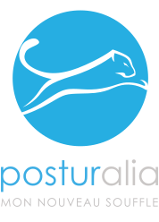

Posturalia, mon nouveau souffle 
Actualité
3
disciplines
(pilates, stretching postural, yoga)
Pilates
Cette méthode a pour objectif le développement des muscles profonds, l'amélioration de la posture, l'équilibrage musculaire et l'assouplissement articulaire, pour un entretien, une amélioration ou une restauration des fonctions physiques.
Stretching
postural
Cette méthode a pour objectif le développement des muscles profonds, l'amélioration de la posture, l'équilibrage musculaire et l'assouplissement articulaire, pour un entretien, une amélioration ou une restauration des fonctions physiques.
Yoga
Cette méthode a pour objectif le développement des muscles profonds, l'amélioration de la posture, l'équilibrage musculaire et l'assouplissement articulaire, pour un entretien, une amélioration ou une restauration des fonctions physiques.
2
types de cours
(classique, séminaire)
Classique
Cette méthode a pour objectif le développement des muscles profonds, l'amélioration de la posture, l'équilibrage musculaire et l'assouplissement articulaire, pour un entretien, une amélioration ou une restauration des fonctions physiques.
Séminaire
Cette méthode a pour objectif le développement des muscles profonds, l'amélioration de la posture, l'équilibrage musculaire et l'assouplissement articulaire, pour un entretien, une amélioration ou une restauration des fonctions physiques.
1
nouveau souffle
(posturalia)
Lundi - Vendredi - 9h00 à 21h00
Samedi - 10h00 à 17h00
Dimanche - 10h00 à 14h00